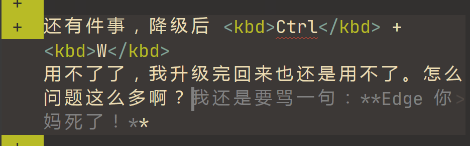

Grief
文章名称就叫 grief，而我也实在想不到合适的标题了，索性就叫 Grief 了。
本篇博文的性质是「杂记」，因此下面都是想到哪写哪，没有什么逻辑性可言。
自怨自艾与莫名的悲伤
博文拖延
这篇文章的一部分内容，本来是打算补充到未完成的第六周总结的，然而拖延症发作，没能及时补充，而现在我认为想写的内容挺多了，时效已过，也不合适再补充到那篇文章了。而本篇文章，本打算今天下午没课时恰好完成，但也从十二点半拖到了现在（三点半），这是第一大悲伤。
作息问题
根据「华为运动健康」，九月份及十月份（至今）睡眠数据如下：
| 睡眠情况 | 9 月 | 10 月 |
|---|---|---|
| 平均睡眠时间 | 8 小时 42 分钟 | 7 小时 16 分钟 |
| 平均夜间睡眠 | 7 小时 43 分钟 | 7 小时 16 分钟 |
| 平均零星小睡 | 58 分钟 | 0 |
| 平均入睡时间 | 23:36 | 00:01 |
| 平均起床时间 | 07:23 | 07:29 |
| 入睡规律性 | 76 分 | 77 分 |
| 起床规律性 | 81 分 | 85 分 |
可见除了规律性，10 月份的睡眠情况是显著比 9 月差的。至于这规律性，大概是赖床的规律性吧😆。这便是第二大悲伤。
逐项进行分析。由于前两项受后面影响，就不讨论前两项。
零星小睡
有两个我很意外的点：
- 9 月平均零星小睡近一个小时
- 10 月平均零星小睡为 0
我印象中 9 月除了开学典礼因为早起而中午狠狠地补觉外，也没有午睡多少，然而居然有这么久的零星小睡。
而 10 月我确实知道很少午睡，但我没想到是根本没午睡。
午睡还是相当重要的，高中我就几乎天天午睡。然而周末及假期，我为了「不让睡眠占据宝贵的休闲时间」，剥夺了我的午睡。
然而没午睡的后果也是显著的，这几周我下午的课程都昏昏欲睡。比如昨天下午第一节的微积分，自己写完作业后放着 bilibili 的网课然后睡着了。
可是扪心自问，我中午真的干了点什么吗？就像今天下午一直到三点半开始写博文这段时间里，我真的做了什么很有意义的事情吗？
并没有，完全没有。
所以我就不可以去午睡，补充一下睡眠吗？
入睡时间
这个我有清晰的感知：9 月份平时基本是 23 点前就上床了，而周末基本也是 23 点半前上床（当然大概我记忆有偏差）；而 10 月份则延迟了，平时大概是 23:15 左右上床，周末则大概 0 点左右。
我在宿舍中一般是最后一个上床，尤其在 10 月，大概每次都是我最后一个。原因是我不想等我上床后还要等室友上床，所以我就等到室友都上床了再上床。而我也客观上注意到了室友上床时间有所延后。
但这只是其中一部分原因。一开始我看到 00:01 还是蛮惊讶的，毕竟除了周末还是很少 0 点以后睡的。不过我想到了一天（10 月 3 日）：那天似乎懵懵懂懂入睡后不久就醒了，伴随着室友如雷鸣般的鼾声。然后蚊子嗡嗡乱飞，几度尝试入睡未果。另一个舍友也翻来覆去，我猜测他也没睡。
然后我拿着手机去厕所买蚊帐了。本来打算在床上买，但灯光太刺眼（连个黑暗模式都没有），我开反色又非常恶心难受，就去厕所了。
然后推荐的全是什么一体式的床帘。话说我记得高二时去别的宿舍看时，pc 的就是一体式的床帘，但是高三我和他一个宿舍后，他没有用床帘或是蚊帐，是我的记忆偏差了吗？我也有点心动，搜罗了挺久。顺便也想看看能不能找个隔音的，一起将鼾声问题解决。期间还浏览了眼罩耳罩、隔音耳机等产品。
但后面我也逐渐冷静下来了，发现我其实是伪需求。
- 我其实不需要眼罩：灯都是由我关的
- 我也其实不需要耳塞什么的
- 效果不好，我高一也试过，不如我捂耳什么的（实际上高一后我就养成了捂耳睡觉的习惯，也许也是我手疾的原因之一？）
- 耳朵难受
- 目前我还几乎没有因为室友的鼾声而无法入眠的情况，这次也是中途醒来而又有蚊子
- 床帘也并不需要
- 室友都是透明蚊帐，一个封闭床帘可能会让别人认为我排斥他人
- 我上床后也不偷卷什么的，没什么开灯的需求
- 隔音效果差
- 价格高昂
因此我最终放弃了其它多余的想法，返璞归真买了个蚊帐。
高中三年没用过蚊帐，结果来南京一个月就用上了。也许是因为只住在 2 层？
当然不止这一次情况，10 月份我也记得有几次睡前拿手机又刷了一下：比如看看新发或更新的博文（名义是欣赏+找茬，实际上也确实找到过几次错误），比如突然想到一个很喜欢的局面，想重温一下，一看就又是半个小时以上（OneDrive 图片查看机制相当烂，缩放极其不顺手，而且缩放后无法切换前后张图片。不过根本原因是我就不应该在手机上看）。这也导致了我入睡时间延迟。
起床时间
10 月的起床时间比 9 月稍晚，这也让我相当吃惊。不过仔细一想也是很合理的，我在给闹钟摇醒后，手表就认为我已经清醒了，然而我还继续躺在床上赖床，或者起来刷会手机。
这个 9 月份不是没有，但我有感知地察觉到 10 月份这个情况愈演愈烈。
就比如今天 7:30 的闹钟（没早八），硬生生是一个又一个 5 分钟的倒计时熬到了八点才起床。
上周末我记得好像 8:00 的闹钟，我刷手机一直刷到了 9:00 才下床。
这个问题严重而难以解决，同时马上就要降温了，更加容易赖床。同时高三一年的赖床问题多次尝试解决未果，也让我对解决赖床问题信心不大。但是时间还是太长了，适度赖床有益身心健康，但过度赖床不仅无益于休息，还浪费了大好的时间。
而刷手机就是应该彻底解决的问题，刷手机的时间完全可以和吃早餐馄饨的时间合并以节约时间。
雄心壮志的破灭
笔记
开学后不久买了几本活页本（家里的没带来），打算用来记笔记，现在还没开封。上课的笔记内容也就是划划几道线，英语也就是把部分不会的单词写个释义，但也没有整理。
而现在微积分和线代的笔记已经落后课堂进度许多了。
英语
这个月初，我把南大的词表整理了一下，说实话估计找不到比我新、比我全、比我格式好的南大词表了。也导入了墨墨，但至今两周多，还没有开始背。
本身不喜英语，英语作业也总是最晚完成的，基本上都是周日去完成的。
而英语听说每周的听写作业，完全听不明白，一句话要反复听好几遍才能勉强记下来。
阅读
因为《共产党宣言》的悦读课，买了本《共产党宣言》，打算马原课上看，现在也就看了二三十页，而且还是囫囵吞枣地看的，看不明白。
CPL 的教材也很久没有看了。
经常在路上，尝试背诵一下《离骚》，这是我高二高三时走路时经常会做的事，而现在已经背不下来了。昨天去食堂路上背《蜀道难》，第一段的一半也没背下来。
阅读问题还是很严重的，其实从高中就有了。我已经很久没有看过什么书了。我似乎已经丧失了阅读的能力，看不下去长篇的内容，日日夜夜被碎片的内容包围、轰炸、充斥。
想想高中三年看过什么书：
- 《乡土中国》：高一时必读书目，囫囵吞枣看的，也不知道看没看完。
- 《平凡的世界》：高一看的，有有意思的故事情节的小说我还是能看得下去的。
- 《普林斯顿微积分读本》：看的电子书。好像也是高一时看的？好像没看完？学微积分时看的。当时我还记得去图书馆自习时，等公交车、坐公交车时就看。
- 《明朝那些事儿》：也是电子书。跟上面那本同期看的。
- 《如何阅读一本书》：跟上面一样。但是没看完。也许因为没看完，所以我没能学会阅读一本书？
- 《Python 编程从入门到实践》：高一时看的。看了一半，只知道个基础语法，然后又没看了。
- 《三体》：第一部高中前就看了，后面两部看的电子书。大概是高二时看的？也许是网课期间？我记得有重温过一次，那一次还是晚上熬夜看的，在有 7:00 左右的早读时 4 点多才睡。
- 《红楼梦》：读了四十几回好像？然后就没看了。
- 《大卫·科波菲尔》：高二时看的，当时的睡前读本。能看下去的理由跟第二本一样。
然后好像就没了？高三更是一本未读。相当的悲哀啊！
网课
前阵子我说过，我要去看 MIT 微积分和线代的公开课，然而除了昨天微积分课上看了几集，我已经估计两三周没看了。
目前我微积分跳了几集，感觉前面讲得还是太慢了点。
DDL
马上要期中了，CPL 下周好像要机试了。让我来盘点下目前还没开始做的 DDL 吧：
- 10 月底前完成慕课美育第一课作业
- 10 月底前完成慕课美育考试
- 12 月中旬前完成马原论文
- 美育戏剧人文观剧主观感受作文
- 美育戏剧人文结课论文
- 悦读《共产党宣言》期末作业
- 英语听说小组视频作业（尚未组队）
- 信物小组视频作业（尚未确定主题）
- 通识「如何筛选网络信息」小组报告作业（我还苦逼地当了组长）
- 五育项目劳育（牢狱）任务（一个多月前参与了一次擦桌子，然后到现在还没参加第二个）
- 跑步 16×2.4km
- ……
不再学习
现在的我跟高考前相比，唯一的差别大概就是知识水平及能力都退步了。
高考前的我到现在的话，估计也能理解课堂内容与完成课后作业。所以说，现在的我开学两个月，以及高考后两个月，究竟干了些什么呢？干了挺多，但好像没学到什么。
2020 年深中泥岗图书馆开放那天我去借了本书，好像是苏联的微积分教材，虽然我没看完（只看了几十页），但也奠定了我微积分的基础。而说实话，我现在的微积分水平估计还不如当时。
2021 年我在用 VSCode，了解到正则表达式，于是去学习了一下。现在我知道正则表达式有很多方言，但共同之处的部分我还是记得的（除了 Vim 的正则，不会）。可以说我是学到了很有用的东西。
2021 年我还学了 markdown，学了 ，前者我现在还在用，后者虽然已经遗忘了，但终究还是学到了一些东西。同时学习了数学公式的 输入，对我现在也是受益匪浅。
2022 年我又学了 Vim，学了一点 Git，学了 AutoHotkey，无疑是对我现在都影响深远的。
2023 年我学了什么呢？我拼命地想，但好像找不出一个答案。
2021 年（或 2022 年）弄 Anki 模板时，我想以后想学好多内容啊，我想学 HTML, JavaScript, CSS, Wolfram Language, Python 等等等等。但我现在好像什么都没学到：HTML 现在只会个 <div> <span>，JavaScript 会个 console.log，CSS 会个 font-size，Wolfram Language 啥也不太会，Python 只知道基础语法……
我似乎只有空想着「我想学什么」，而不是说「我要学什么」。
尤其是看着朋友圈的同学们，更加自惭形秽；看着 GitHub 上的大佬们，羡慕而茫然无措。
灰色的生活
很有意思的是，Copilot 给这个标题的建议是「无法自拔的游戏」，然而实际上我不玩游戏。
以前倒也不是不玩，高二后好像就没玩了。
我在之前的博文也隐约提到过我对网络之外的事务没啥兴趣。这显得好像我的社交全在网上一样，实际上也并不。我在网络上也不怎么说话的。
看了看我有的社交账号，好像基本都是论坛性质的，而且也几乎没说过话。
知乎账号以前有一个，高考后不久注销了。但注销前其实也没说过几次话，只是我不喜欢知乎而已。只不过我现在了解热点新闻的途径还是知乎。
微博也有一个账号，但我其实不用微博，只不过有时候为了查证一些东西，或看特定的内容时，需要一个账号。2021 年背单词用的扇贝，当时转发微博领奖励，除此之外再没有动态。
其它的也没什么可说的。
所以说无论是线下还是线上，我的生活其实都相当的单调无趣。
这其实也意味着，一旦我陷入一个游戏，我就很难自拔了。某种意义上来说，Copilot 没说错。悲伤啊！。
无能的分享
昨天 hmx 发了个朋友圈，发的是他 2021 年末时的备忘录，里面有句话「分享欲是最高级的浪漫」，我看了之后感触颇深。
我虽然沉默寡言，但我其实也迫切地想要分享，只不过没有可以分享的对象。
不过好在这个问题通过博客的途径可以部分地解决了，我通过写博文释放自己的情感，其他人也可以看我的博文。
但还有一些问题，比如说我分享的质量不高，这跟我不再学习有强烈的关联。我不像 hmx 那样才华横溢、文采飞扬，能用诗表达自己的情感，我只能用平淡笨拙，毫无逻辑不知所云的文字写点东西。
更重要的是，我其实迫切地希望得到回应，分享在博文只是一部分，我更希望有人能给予我回应。更准确地说，我希望有个能懂我的人。但我在之前的博文也提到过，我对此不抱希望。
正因为如此，我会反复读自己的博文，把自己当成一个懂我的人，Ta 能从各个角度、维度与我进行交流沟通，满足我这点分享欲。但是，我毕竟还是我，我的思想操纵了我的意识与行动，我永远无法真正成为第二个人来与我相处。其它能懂我的人的想法能从新的视角给我以启发。但是也如上面所说，我不抱希望。不过给我一丝希望的是，人工智能有这个潜力。
杂七杂八
以上的问题长期存在，积压许久，最终点爆我情绪的却是其它令我烦躁的事情。
六点了，我要去吃饭然后上信物课了。具体请听下回分解。
Edge
本来我对 Edge 还是挺有好感的，毕竟是微软家的，我对微软也挺有好感。但最近发生几件事让我对 Edge 产生了极大的不满。
首先是有时候 Edge 在关闭状态下，点击任务栏图标无法打开。在托盘图标的 Edge 打开新标签页可以打开 Edge，但有些插件无法正常使用。这个时候需要退出托盘的 Edge，然后就能通过任务栏图标打开 Edge 了。
说实话这个问题挺烦的，而且出现也不是一次两次了。但由于这个问题比较难描述，而且间接解决方案不算困难，因此我也就没去寻求根治的解决方案。
昨天下午，我发现我的 Edge 是 Beta 预览版，估计是因为我的 Windows11 也是 Beta 版。我就寻思会不会是 Beta 版的问题，于是我就去关闭了「提前预览 Microsoft Edge 版本」这个选项，然后重启了 Edge。
就在刚刚，我要复制那个选项的名称，结果就又打开了那个选项，又从正式版变为了预览版。
重启后，我发现插件都没了，去插件页发现提示全部插件都损坏了。全部登录信息都失效了，估计是 Cookies 给清了。我猜测是它本地数据全给我弄没了，然后从云端同步了一份数据。
我猜大概是它更新时删掉了 C:\Users\<UserName>\AppData\Local\Microsoft\Edge 这个文件夹，然后创建了 Edge Beta 这个文件夹。
我就相当疑惑啊，为什么我只是降个级升个级就把我本地数据清完了。如果说降级升级确实是危险操作，那我为什么在刚刚又能那么容易地开始关闭那个选项？而且即使我误触打开后，也无法取消。即使迅速结束 Edge 任务，及时备份数据，再次启动还是升级到了 Beta。不过这次数据没丢失，而昨天降级后我安装回插件，又尝试了升级，插件就又损坏了。
Cookies 什么的清了也就罢了，重新登录虽然麻烦，但记着密码也不成大问题。关键是 Edge 插件数据丢失了。让我盘点一下丢失配置的插件：
- Global Speed：配置了三个快捷键，好在比较简单的配置，手工恢复了。
- Infinity 新标签页：好在这个有登录，配置保存在云端。庆幸我高考后有登录。
- uBlock Origin：自定义屏蔽的内容丢失了。也没有备份，只能重新配置，好在这个问题不算大。
- 侧边翻译：配置比较简单，也手工恢复了
- Proxy SwitchyOmega：好在没多少配置，只是系统代理，也是手工恢复了。
- Redirector：这个插件用来重定向知乎，配置了几条规则，手工恢复了一条，剩余几条好像是图片的配置？
- Refined GitHub：这个插件基本没动，因为是英文的。不过用了 GitHub 的 Token，重新创了一个。
- 沉浸式翻译：这个有 Google 备份，保存在云端，恢复了。本地只有一个快捷键是要重新手工配置的。
- 篡改猴测试版[1]：这个插件损失最为惨重。里面有很多脚本，都是保存在本地，而迁移时的备份已经删除了。想要再恢复一点估计得等寒假回家看看了。还有比如非网上的脚本，一个显示 Wiki 公式源码的脚本，我基本本地有存，只不过找不到了。目前凭着印象恢复了部分，但脚本的配置也就只能按默认来了。比如知乎之前我记得是有个夜间模式按钮，同时右侧没有广告并居中回答；而现在要加
?theme=dark才能夜间模式，而且这个夜间模式颜色似乎比以前深？不如以前舒服，而且有时候重新打开夜间模式又没掉了，同时回答没能居中，右侧广告我也是用 Origin 才去除的。
然后恢复完数据我就把数据文件夹链进了 OneDrive 里。但我还是想口吐芬芳，大骂 Edge 一遍。
还有件事，降级后 Ctrl + W 用不了了，我升级完回来也还是用不了。怎么问题这么多啊？

想起了一个 VSCode 的 issue，没啥关联，只不过对 Author 有了点共鸣：THIS THING DELETED 3 MONTHS OF WORK!!!
Windows
Bug11 也是问题多多。最近突然出现一个问题就是，打开文件资源管理器后，左边导航窗口会只显示一个「此电脑」，然后等数秒才会显示其它的，这个时间有长有短，短的大概我鼠标移到那边就加载好了，长的大概我刚刚试了一下 7、8 秒才好，而且是每次都会。这个问题影响还是很大的，毕竟我打开一个新标签页就是为了快速打开一个文件夹，而导航窗口里则是我经常去的，我还得等它加载完，相当令人烦躁。
数字华容道
其实这没啥令我生气的，要说实在有个生气的点，大概是因为是在马原课上玩的。
昨晚马原课小组汇报完，老师要授课，结果我给手表装了一个数字华容道开始玩。我还隐约记得高一（？）时突然掀起了课间用电脑玩数字华容道的热潮，xg 可是一把好手，保持了数字华容道的记录。而当时我也尝试过几次，但不知道为什么没能找到窍门。
而昨晚我玩了一下，第一局摸索出了前两行的方法，当然不是最快的：前两行的前两个可以中规中矩地移动过去，而后两个我则采取绕进去的方法——将两个连在一起，然后「顺势」绕进去。例如 4 在 7 位，3 在 6 或 11 位。而最后两行，则是先将 9 10 11 12 排好，然后缩进左边 2×2 的方格里，即分别在 14 13 9 10 位，调整右边，使 15 在下三角的上面，然后原样回复。
然后在运气和技巧加持下，我创造了个 38s 的记录，而上一个记录还是 1min+。因此我野心勃勃想要打破这个记录，突破 30s，又开了一局。
开局相当顺利，如果运气好的话说不定真能破了记录。但是到最后我发现最后一行是 15 14 13，我尝试使用上面的技巧，却迟迟无法解决，只好随意点，寄希望于找到什么新的技巧。
但是尝试许久还是始终无法成功。我也没想着去网上搜一下，毕竟我想自己探索一下技巧。但是 7min+ 仍未完成，马原课也上完了，我只好投降。
结果一查答案似乎是无解。
令我比较生气的可能是它一个游戏给我无解的局面吧。想到高三时同学手表游戏里有 24 点，有时候也是无解。
周六早上跑了个 2.46km，累死我了，应该是我人生中连续跑最远的一次了（倒也不一定，初三时练 1km，周末在笔架山跑过，只不过不知道有多长）。感觉每跑一次长跑，我脑细胞就要死不知第多少。跑完后脑袋涨痛，缺氧，坐着休息了十多分钟才回宿舍。
想起高二一次体测跑 1km，跑完后也是如此，只不过当时最后还有冲刺，而今天我冲不动了，慢悠悠。当时在食堂也吃不下饭，趴着休息了一会，最后什么也没吃。
难以想象我初中还能跑进 4min，当时中考体育原本是打算选 1km+引体向上的，引体向上能 120 分，1km 就只需要 80 分。而我记得 80 分是 3 分 40 秒左右？当时我还是能差不多到的。到后面由于疫情，可以把 1km 换成了比较轻松的跳绳，也就成功满分了。说句比较畜生的话，我还得感谢疫情呢。而现在我最快配速离 4min 也差距不小，平均配速更是 5min+。
最近朋友圈也挺多同学晒跑步数据。昨天 wzj 晒了个跑一万米的，属实震撼。他最低配速跟我最高配速差不多，而且我配速一路大跌。但是换算一下，他跑马拉松也要 3h+，更让我对 2h 的世界纪录感到震撼和敬畏。
悟已往之不谏，知来者之可追
这样看来本篇博文像是在倒垃圾一样，私博这样倒无妨，公博里倒垃圾倒也不合适（说起来摆记仍然没更新）。弄得我好像怨天尤人的泼妇一样，还是应当改变目前的窘境的。然而常常是光说不做，这也便是最后也是最大的一个悲伤了。
规划先不做，实际上只要平时减少一点摆烂消磨时间的行为，就足以提升很多了。也不必步子迈得那么大。
近况
UltiSnips
之前更新 Vim 配置博文时提到了我在 UltiSnips 开了一个 PR: Add JumpOrExpand support，而这几天终于给 merge 了。
依葫芦画瓢式的改动，我虽然不会 Python 与 VimScript，倒也能弄个 PR。
还用 WSL 跑了部分 Tmux 的测试。这个测试的添加也算是有惊无险地成功了。
不过 CI 测试 11 个挂了 4 个，但我也不清楚原因。不过作者认为「CI Failures seem to relate to latest Git version, but have nothing to do with this change.」，跟我的更改没太大关系，就 merge 了。
说起来前阵子给 Waline 提交过一个纯文档的 PR，Checks fail 了一个，但作者也没管。
showKeyBoard
昨天（10 月 20 日）闲着没事不知道咋进了 KMCounter 的 issue，找到了 showKeyBoard 这个只有两个月的项目。试用一番后当即删掉了 KMCounter 和 Carnac。
简而言之 showKeyBoard 能记录按键和鼠标的数据，还能像 Carnac 一样显示按键。
一开始统计按键数据我用的是 WhatPulse，然而这个软件部分功能要付费，而且会上传我的数据，没多久我就弃用了，找到了一个比较简易的替代品，就是 KMCounter。
然而 KMCounter 也确实太简陋了。首先它在高分屏下字体显示太小了；其次它只能显示当日和累计的数据（当然也可能是我不会操作）。在用 WhatPulse 时每隔一段时间我就会打开看看按键热力图，想象着每个键是个国家，彼此之间纷争的故事，非常有意思。但 KMCounter 我就没打开过统计数据几次。
而 showKeyBoard 很好地解决了一大票问题。当然目前也有部分问题，跟 WhatPulse 比也有差距，我也提了个 issue。希望这个项目能发展壮大吧。
刚刚去找官网才发现纯白的图标变成了乌克兰国旗，看来是「Stand with Ukraine」了。
每生一体育俱乐部
最近要参加这个项目，然而没太在意，错过了第一次选课。在这期间还出现了一档子删档事故，在此不再多言，因为我目前实际上没受什么影响。
然后参与补选，都是些冷门项目，我也没啥所谓。
不过比较奇葩的是必须选满五个。我随便选了几个，但看到了一个项目，时间正好是我 CPL 课的第三节，因为 CPL 课是唯一一个我下午三节课时的课程，因此跟别的课相当容易冲突。我当时就在想，如果中了这个，那我就可以减少时间的浪费了。抱着戏谑地心态，我就选了这个。
结果只能说是命运的安排，中了。不过这也意味着我上了两节 CPL 就得赶去俱乐部。CPL 课老师比较喜欢拖堂，而且堂而皇之走出教室还是让我挺尴尬，蛮不好意思的。
不过上大学后我也逐渐没脸没皮了，这倒不是什么问题。
分析就算了吧，我逻辑思维能力也不强，最后也只是浮于表面。因此这个倒垃圾博文就到此为止吧。
字数统计
感觉 NexT 的字数统计不太准，估计是把代码公式什么的计入了。我用 VSCode 插件 Word Count CJK 的字数统计统计一下迄今（10 月 21 日）几篇博文的字数：
插件统计字数包括了博文的格式头。
| 博文 | 字数（个） | 大小（字节） |
|---|---|---|
| 截距式方程相关结论与推导过程 | 516 | 6637 |
| 多个正整数和与积相等问题的初步讨论 | 340 | 3855 |
| 北京冬奥会观后感 | 1130 | 4239 |
| 初遇信息熵 Information Entropy | 279 | 3022 |
| 极限初探 | 278 | 4392 |
| 2022 年 9 月 25 日胡思乱想 | 2155 | 8005 |
| 2022 年国庆小记 | 821 | 7350 |
| 截距式方程相关结论改进 | 797 | 8902 |
| 新鬼烦冤旧鬼哭 | 6527 | 24268 |
| 几道自创高考数学题 | 516 | 6398 |
| 建博记 | 3659 | 32227 |
| 使用 Windows 软件集合 | 5356 | 30054 |
| 我的 Vim 配置 | 4093 | 56334 |
| 2023-08-26 杂记 & 南京大学邮箱设置 | 1388 | 6023 |
| AutoHotkey 脚本重构小记 | 6137 | 37392 |
| 2023-08-28 杂记 | 1310 | 12324 |
| 南京之旅 | 1638 | 6040 |
| AutoHotkey 脚本 OCRC 介绍 | 6026 | 33529 |
| 《微积分》笔记 1 | 449 | 3511 |
| 大学第一周总结 & 杂记 | 2826 | 10235 |
| 「记」类型的区分 & 2023 年 10 月 2 日杂记 | 5015 | 23626 |
| 《线性代数》笔记 1 & 💓 | 1816 | 14760 |
| 《微积分》笔记 2 | 538 | 8296 |
| 2023 年 10 月 16 日第六周总结 | 2964 | 13396 |
| 《信息科学中的物理学》笔记 1 | 1582 | 11376 |
| Grief | 7382 | 30333 |
说实话这名字真难听，真不如以前的民间名称「油猴」。 ↩︎